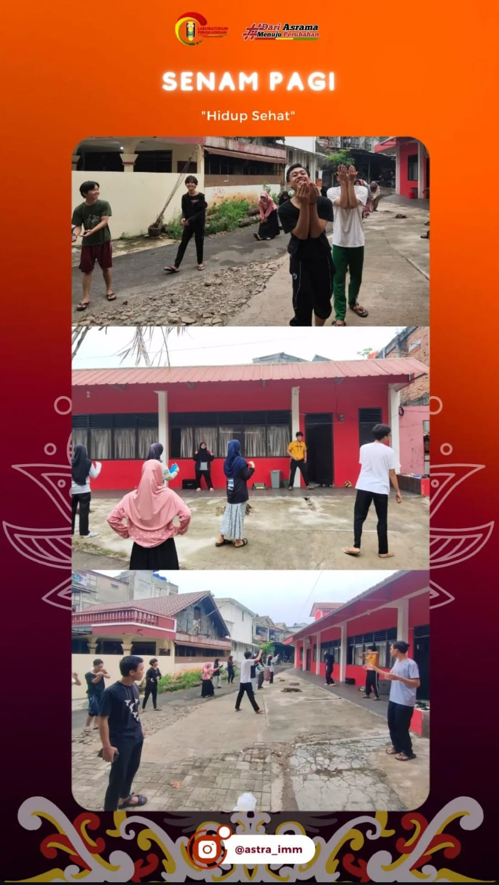

 Bidang seni, budaya dan olahraga (Senbura) adalah salah satu bidang yang ada di gedung merah ini. bidang ini biasanya mewadahi seluruh warga asrama yang ada digedung merah untuk hidup sehat, berbudaya, dan terus meningkatkan kompetensinya di bidang seni. di bidang ini ada beberapa program yang di naunginya yakni seperti olahraga bersama (futsal, badminton, renang, dsb).